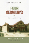
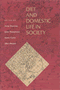

|
Just
a Dog
Understanding Animal Cruelty and Ourselves
Arluke, Arnold
232 pp • 6x9 • Spring 2006
paper 978-1-59213-472-4
cloth 978-1-59213-471-7
|
|
Women
Living Change
Bourque, Susan C. and Donna Robinson Divine
288 pp • Spring 1985
cloth 978-0-87722-369-6 |

|
Human
Universals
Brown, Donald E.
220 pp • Spring 1991
cloth 978-0-87722-841-7 |

|
Family and Work in Everyday Ethnography
edited by Brown, Tamara Mose and Joanna Dreby
228 pp • 5.5x8.25 • Fall 2013
paper 978-1-4399-1076-4
cloth 978-1-4399-1075-7 |

|
Paradise
Remade
The Politics of Culture and History in Hawai'i
Buck, Elizabeth
288 pp • 5.5x8.25 • Fall 1992
paper 978-1-56639-200-6
cloth 978-0-87722-978-0 |

|
Maya
In Exile
Guatemalans in Florida
Burns, Allan F., introduction by Jerónimo Camposeco
256 pp • 5.5x8.25 • Spring 1993
paper 978-1-56639-036-1
cloth 978-1-56639-035-4 |

|
Children
in the Field
Anthropological Experiences
edited by Cassell, Joan
288 pp • Fall 1987
paper 978-1-56639-206-8
cloth 978-0-87722-477-8 |

|
Expected
Miracles
Surgeons at Work
Cassell, Joan
259 pp • Spring 1991
paper 978-0-87722-838-7
cloth 978-0-87722-804-2 |

|
Pushing for Midwives
Homebirth Mothers and the Reproductive Rights Movement
Craven, Christa
224 pp • 6x9 • Fall 2010
paper 978-1-4399-0220-2
cloth 978-1-4399-0219-6
|

|
BITS of Belonging
Information Technology, Water, and Neoliberal Governance in India
Dasgupta, Simanti
232 pp • 6x9 • Fall 2015
paper 978-1-43991-259-1
cloth 978-1-43991-258-4 |

|
Sponsored
Identities
Cultural Politics in Puerto Rico
Dávila, Arlene M.
301 pp • 5.5x8.25 • Fall 1997
paper 978-1-56639-549-6
cloth 978-1-56639-548-9
|
|
Ordinary
Poverty
A Little Food and Cold Storage
DiFazio, William
232 pp • 6x9 • Fall 2005
paper 978-1-59213-458-8
cloth 978-1-59213-014-6
|

|
Consumed
in the City
Observing Tuberculosis at Century�s End
Draus, Paul
304 pp • 6x9 • Spring 2004
paper 978-1-59213-249-2
cloth 978-1-59213-248-5
|

|
Making
Time
Ethnographies of High-Technology Organizations
edited by Dubinskas, Frank A.
238 pp • Spring 1988
cloth 978-0-87722-535-5 |

|
Confronting
the Margaret Mead Legacy
Scholarship, Empire, and the South Pacific
edited by Foerstel, Lenora and Angela Gilliam
309 pp • Fall 1991
paper 978-1-56639-261-7
cloth 978-0-87722-886-8 |

|
Ethnographies of Youth and Temporality
Time Objectified
edited by Dalsgård, Anne Line, Martin Demant Frederiksen, Susanne Højlund and Lotte Meinert
Afterword by Michael Flaherty
206 pp • 6x9 • Fall 2013
cloth 978-1-4399-1066-5 |

|
Young Men, Time, and Boredom in the Republic of Georgia
Frederiksen, Martin Demant
New in Paperback!
216 pp � 6x9 � Fall 2016
paper 978-1-4399-0919-5
cloth 978-1-4399-0918-8 |

|
Lucia
Testimonies of a Brazilian Drug Dealer's Woman
Gay, Robert
240 pp • 6x9 • Spring 2005
paper 978-1-59213-339-0
cloth 978-1-59213-338-3
|

|
Reshaping
Ethnic and Racial Relations in Philadelphia
Immigrants in a Divided City
Goode, Judith and Jo Anne Schneider
296 pp • 6x9 • Spring 1994
paper 978-1-56639-141-2
cloth 978-1-56639-140-5
|
|
Fishers
at Work, Workers at Sea
A Puerto Rican Journey through Labor and Refuge
Griffith, David and Manuel Valdés Pizzini
280 pp • 6x9 • Fall 2001
paper 978-1-56639-911-1
cloth 978-1-56639-910-4
|

|
Food
and Evolution
Toward a Theory of Human Food Habits
edited by Harris, Marvin and Eric B. Ross
640 pp • Spring 1987
paper 978-0-87722-668-0
cloth 978-0-87722-435-8 |
|
The Hip Hop Underground
The Integrity and Ethics of Racial Identification
Harrison, Anthony Kwame
226 pp • 6x9 • Fall 2009
paper 978-1-4399-0061-1
cloth 978-1-4399-0060-4
|

|
Vodou Songs in Haitian Creole and English
Hebblethwaite, Benjamin
396 pp • 6x9 • Fall 2011
paper 978-1-4399-0602-6
cloth 978-1-4399-0601-9
|

|
Bachata
A Social History of a Dominican Popular Music
Hernandez, Deborah Pacini
296 pp • 6x9 • Spring 1995
paper 978-1-56639-300-3
cloth 978-1-56639-299-0 |

|
Patriotic Professionalism in Urban China
Fostering Talent
Hoffman, Lisa M.
216 pp • 6x9 • Spring 2010
paper 978-1-4399-0035-2
cloth 978-1-4399-0034-5
|
|
Spirits,
Blood, and Drums
The Orisha Religion in Trinidad
Houk, James T.
256 pp • 5.5x8.25 • Fall 1995
paper 978-1-56639-350-8
cloth 978-1-56639-349-2
|

|
Telling Young Lives
Portraits of Global Youth
edited by Jeffrey, Craig, and Jane Dyson
232 pp • 6x9 • Fall 2008
paper 978-1-59213-931-6
cloth 978-1-59213-930-9
|
|
Sonic Spaces of the Karoo
The Sacred Music of a South African Coloured Community
Jorritsma, Marie 224 pp • 6x9 • Spring 2011
cloth 978-1-4399-0237-0 |

|
Accidental Immigrants and the Search for Home
Women, Cultural Identity, and Community
Kelley, Carol E.
190 pp • 6x9 • Spring 2013
paper 978-1-4399-0946-1
cloth 978-1-4399-0945-4 |

|
Music,
Talent, and Performance
A Conservatory Cultural System
Kingsbury, Henry
228 pp • 5.5x8.25 • Fall 1987
paper 978-1-56639-891-6
cloth 978-0-87722-516-4
|

|
Storytelling
in Daily Life
Performing Narrative
Langellier, Kristin M. and Eric E. Peterson
288 pp • 7x10 • Fall 2003
paper 978-1-59213-213-3
cloth 978-1-59213-212-6
|

|
Hope Is Cut
Youth, Unemployment, and the Future in Urban Ethiopia
Mains, Daniel
208 pp • 6x9 • Fall 2011
paper 978-1-4399-0480-0
cloth 978-1-4399-0479-4
|

|
Creolizing Contradance in the Caribbean
edited by Manuel, Peter
288 pp • 6x9 • Spring 2009
paper 978-1-59213-735-0
cloth 978-1-59213-734-3
|

|
My
Mother's Hip
Lessons from the World of Eldercare
Margolies, Luisa, foreword by Walter M. Bortz II, M.D.
360 pp • 6x9 • Fall 2003
paper 978-1-59213-238-6
cloth 978-1-59213-237-9
|

|
Urban
Dangers
Life in a Neighborhood of Strangers
Merry, Sally Engle
278 pp • Spring 1981
paper 978-0-87722-425-9
cloth 978-0-87722-219-4 |

|
Crossing
the Neoliberal Line
Pacific Rim Migration and the Metropolis
Mitchell, Katharyne
296 pp • 6x9 • Fall 2004
paper 978-1-59213-084-9
cloth 978-1-59213-083-2
|
|
Social
Inequality in Oaxaca
A History of Resistance and Change
Murphy, Arthur D. and Alex Stepick, foreword by Henry A. Selby
300 pp • Fall 1991
paper 978-0-87722-869-1
cloth 978-0-87722-868-4
|

|
Ecomusicology
Rock, Folk, and the Environment
Pedelty, Mark
242 pp • 6x9 • Spring 2012
paper 978-1-4399-0712-2
cloth 978-1-4399-0711-5 |

|
Maya
Achi Marimba Music in Guatemala
Pellicer, Sergio Navarrete
288 pp • 6x9 • Spring 2005
paper 978-1-59213-292-8
cloth 978-1-59213-291-1
|
|  |
Four Germanys
A Chronicle of the Schorcht Family
Pitkin, Donald S. 312 pp • 6x9 • Fall 2016
paper 978-1-4399-1343-7
cloth 978-0-87722-468-6 |

|
Science
that Colonizes
A Critique of Fertility Studies in Africa
Riedmann, Agnes
192 pp • 6x9 • Spring 1993
cloth 978-1-56639-042-2 |
|
Cattle,
Capitalism, and Class
Ilparakuyo Maasai Transformations
Rigby, Peter
272 pp • 6x9 • Fall 1992
paper 978-1-56639-204-4
cloth 978-0-87722-954-4 |
 |
Struggling State
Nationalism, Mass Militarization, and the Education of Eritrea
Riggan, Jennifer
258 pp • 6x9 • Spring 2016
cloth 978-1-4399-1270-6
|

|
Islam
in Urban America
Sunni Muslims in Chicago
Schmidt, Garbi
256 pp • 6x9 • Fall 2003
paper 978-1-59213-224-9
cloth 978-1-59213-223-2
|
 |
Diet
and Domestic Life in Society
edited by Sharman, Anne, Janet Theophano, Karen Curtis and
Ellen Messer
288 pp • Fall 1990
cloth 978-0-87722-751-9 |

|
Governing How We Care
Contesting Community and Defining Difference in U.S. Public Health Programs
Shaw, Susan J. 214 pp • 6x9 • Spring 2012
paper 978-1-4399-0683-5
cloth 978-1-4399-0682-8
|

|
Walk
the Walk and Talk the Talk
An Ethnography of a Drug Abuse Treatment Facility
Skoll, Geoffrey R.
224 pp • 5.5x8.25 • Spring 1992
cloth 978-0-87722-917-9 |

|
American Heathens
The Politics of Identity in a Pagan Religious Movement
Snook, Jennifer
242 pp • 6x9 • Spring 2015
paper 978-1-4399-1097-9
cloth 978-1-4399-1096-2 |
 |
We Shall Not Be Moved/No nos mover�n
Biography of a Song of Struggle
Spener, David
208 pp • 5.5x8.25 • Spring 2016
paper 978-1-4399-1298-0
cloth 978-1-4399-1297-3
|

|
Masters
of the Sabar
Wolof Griot Percussionaists of Senegal
Tang, Patricia
Includes CD
224 pp • 6x9 • Fall 2006
paper 978-1-59213-420-5
cloth 978-1-59213-419-9
|

|
Pinoy Capital
The Filipino Nation in Daly City
Vergara, Jr., Benito M.
232 pp • 6x9 • Fall 2008
paper 978-1-59213-665-0
cloth 978-1-59213-664-3
|
 |
Ghostly Encounters
The Hauntings of Everyday Life
Waskul, Dennis with Michele Waskul
164 pp • 5.5x8.25 • Spring 2016
paper 978-1-4399-1289-8
cloth 978-1-4399-1288-1
|

|
Street
Addicts in the Political Economy
Waterston, Alisse
304 pp • 5.5x8.25 • Fall 1992
paper 978-1-56639-574-8
cloth 978-0-87722-992-6 |

|
Contemporary Social Constructionism
Key Themes
Weinberg, Darin
214 pp • 5.5x8.25 • Spring 2014
paper 978-1-4399-0925-6
cloth 978-1-43990-924-9
|
|
Producing
Power
Ethnicity, Gender, and Class in a Caribbean Workplace
Yelvington, Kevin A.
304 pp • 6x9 • Spring 1995
paper 978-1-56639-286-0
cloth 978-1-56639-285-3
|